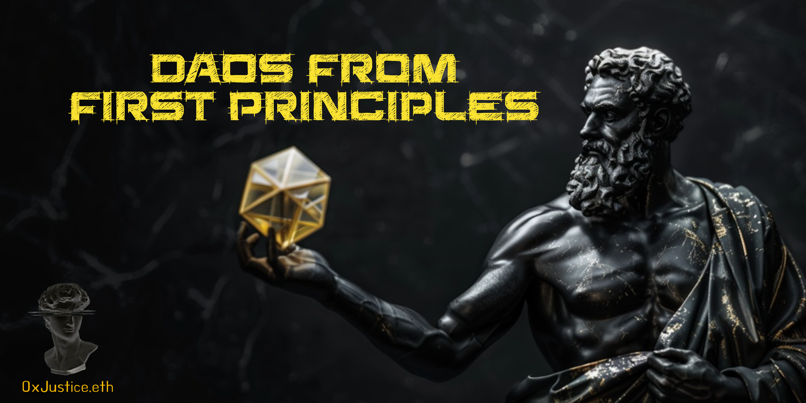
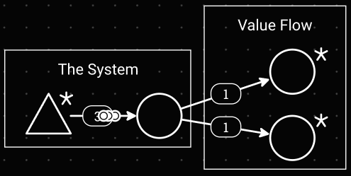
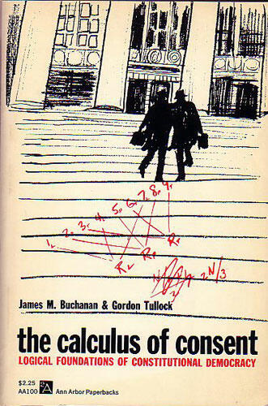
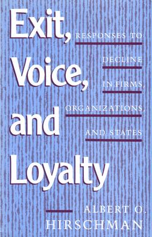
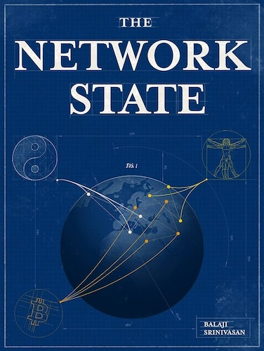

DAOs from First Principles
Originally published at https://paragraph.com/@0xjustice/daos-from-first-principles

Most of what you've heard about DAOs is a lie. They don't inherently provide more equitable access or contribution opportunities. If you force them to do so, you ensure they don’t produce anything noteworthy and never rise above the lowest common denominator. Greatness doesn't spring from the mid-curve.
This admission doesn't mean that DAOs are dead or a waste of time. Some of their key features are very interesting and compelling. Most notable may be their ability to coordinate people in predetermined and programmable ways. While this facet may sound attractive to an engineer, it's undoubtedly not as appealing to the masses as the vision of DAOs being powerful tools of egalitarianism.
The exuberance and optimism that led countless people to start DAOs to address a world problem have nearly run dry. Now, we’re left with a question: Did DAOs fail, or were we doing it wrong?
Let’s go deeper on this. Assuming a DAO is effectively a “humans-in-the-loop” smart contract, we can analyze DAOs from first principles by asking three questions:
-
Why do we govern?
-
What do we govern?
-
How should we govern?
Why do we Govern?
Governance isn't always a feature. As a rule, it's better to reduce or eliminate the need for human decisions when you can. Technology's whole tendency is to do this. It's called automation. So why do we need governance at all? We need DAOs because of change. DAOs exist because unpredicted change is inevitable. Any system will eventually need to be fixed, improved, or tweaked to accommodate a changing environment or human priorities.
Hubble
The Hubble Space Telescope project cost $1.5 billion and took 20 years to complete. Despite the rigorous scientific and engineering efforts, a flaw was detected in the primary mirror after it was deployed to space. The mirror was misshapen by 2.2 microns or about 1/50th the thickness of a human hair.
Fixing the bug would take another three years and cost the project an additional $1 billion. Even the best-laid plans with nearly unlimited resources are not immune to error and the need for change.
Bitcoin
The Bitcoin network has experienced at least three significant incidents that required rapid intervention. In 2010, the code was exploited, creating 184 billion bitcoins in a single transaction, which required Satoshi Nakamoto to release a patch (0.3.10) within a few hours to invalidate the fraudulent transaction.
In 2013, it experienced another fork caused by an incompatibility between Bitcoin versions 0.7 and 0.8, which required a coordinated downgrade and careful re-upgrade. Then again, in 2018, a vulnerability was discovered that allowed an attacker to create new bitcoins above the 21 million limit, which had to be promptly fixed in a patch (0.16.3). Even in the scope of immutable blockchains, code is imperfect, and intervention is sometimes required to avoid catastrophe.
Fundamental Incompleteness
There is a technical philosophical study of contracts called contract theory. Within this field, there's a domain of focus called incomplete contracts, which deals with the unpredictability of contract specifics. It's a recognized reality that all contracts are incomplete because “... the human mind is a scarce resource and cannot collect, process, and understand an infinite amount of information.” Therefore, you can’t anticipate all possible contingencies. The goal is to produce sufficient completeness so courts can enforce and arbitrate.
Kurt Godel
We’ve seen how errors and bugs arise in critical hardware, software, and legal contracts. But there's an even deeper reality at play because even if we go to the bottom of logic and formal verification, here be dragons. Kurt Gödel’s incompleteness theorems demonstrated that any sufficiently complex axiomatic system would either be incomplete, unable to prove all truths, or consistent, avoiding contradictions but never fully able to prove all truths within its own framework.
We need humans in the loop because of unpredictability, and the need for human intervention is inescapable.
What do we Govern?
A Web3 protocol ultimately governs two things: its model and value flows. This framing cuts through the often unnecessary verbosity of DAO governance.
The Model
The idea of a “business model” first appeared in academic literature in the 1960s but became more popular in the late 1990s due to the internet boom. Web3 protocols formalize this same idea into a pure and abstract form. The fundamentals are the same. A business model or protocol determines how a system creates, delivers, and captures value. In a web3 context, this includes technical governance on proposals like EIPs, BIPs, PIPs, etc.

System vs. Value Flows
Value Flows
The second realm of governance is determining how to spend the value produced by the model. Ideally, these systems are valuable, so they fractionalize that value through tokenization and distribute it to maintain and advance the network. This is the realm of grant programs and treasury management.
https://allobook.gitcoin.co/
While grants usually get the most attention, many other costs must be considered and ultimately funded from this reserve. Things like infrastructure and operations, block explorers, RPCs, data availability, and staffing that drive marketing, social media, documentation, events, etc, are all costs not typically considered but must be funded.
How do we Govern?
In this section I’ll describe how DAOs typically try to govern and why it not only doesn’t work but can’t work.
Majority Rule
As I stated previously, DAOs came to great popularity by being sold as great equalizers. The message was that technology could ensure everyone had equal access.
Two interesting observations here. This was never really the case, nor is it even advisable. While majority rule can work for things like selecting a place for lunch, it was universally vilified as idiotic and never upheld as a suitable approach to governance by the Greeks through the American founding fathers. Direct democracy is slow, inefficient, and unspecialized and can only exist until people realize they can vote for endless privileges.
Delegation
If majority rule (democracy) doesn’t work, adding delegation doesn’t fix it. Delegation does have advantages in that it multiplies roles. You can be a large token holder and yet not have the technical and operational knowledge to vote on protocol upgrades, so you delegate to more experienced operators. This is useful but raises other problems, like the principle agent problem.
You (the principal) have motives that are not necessarily the same as those of the operators you delegate to (the agent). You want the protocol's long-term sustainability and profitability, whereas delegates may want more delegations, and notoriety is often a way to achieve that. It's a subtle distinction but significant.
A second issue is the Iron rule of oligarchy. This is the observation that “rule by an elite, or oligarchy, is inevitable within any democratic organization as part of the ‘tactical and technical necessities’ of the organization.” Practically, this means those closest to the operational levers ultimately run the show because they can stack the deck by optimally positioning their constituents behind a guise of democratic rule.
Public Choice Theory
Just as Gödel formally undercut the axiomatic method, something called Public Choice Theory fundamentally undermines romantic views of governance. Public Choice Theory uses economic tools to deal with traditional problems of political science, and its creator, James M. Buchanan, would ultimately receive the Nobel Prize for it in 1986.

One way it does this is by quantifying the cost of democratic proposals. If it's more costly for an electorate to be mindful of and vote against detailed regulatory minutiae than to let laws be passed, even if they are harmful, they will pass. This illustrates the concept of voting costs and the principle of concentrated benefits and dispersed costs. Space doesn't permit a fuller introduction to these ideas, so watch this fantastic video by Prof. Antony Davies when you’re ready for the black pill.

Alternatives
If we need governance, but direct democracy and representative democracy fall short in practice and theory, how do we govern?
Overloading Voice
Albert O. Hirschman's 1970 book “Exit, Voice, and Loyalty” describes two ways to drive change: Exit and Voice. All forms of governance ultimately employ “voice” to affect change, but there is another path in “exit,” which entails just leaving altogether.

This realization partly rests on the observation that there's no correct way to govern. People can prefer different risk/reward environments and change their preferences over time. Enumerable DAO papers, conferences, workshops, and panels have been spent quibbling over what ideal governance is, and the presumption itself is erroneous.
When you think about it, exit is the primary method of communication in a free market. We must face the possibility that the DAO scene has massively overindexed on voice and consider rethinking things with exit at the center.
Rediscovering Exit
The strongest manifestation of the rediscovery of exit may be the Network State movement. Rather than waste cycles attempting to effect change through existing politics, the Network State movement opts to drop out and start fresh. This position is not as novel as it might sound. Another term for this idea is regulatory competition. The idea is that even things like governments ultimately compete in the larger free market of planet Earth.

https://thenetworkstate.com/
The Tiebout Model formalizes this idea by arguing that competition across local jurisdictions places competitive pressure on the government to provide suitable public services and infrastructure, or residents will leave. This approach could be called privatization and optionality over consensus.
Corporate Governance
The future of DAOs is corporate governance. Go to any event with experienced DAO operators, and the new ideas people are discussing are corporate governance concepts dressed in new vocabulary. This is a great thing, not something to be ashamed of. Ideas in resurgence:
-
Permissioned access
-
Scoped roles and responsibilities (Hats)
-
Optimistic governance
-
Separation between owners and investors (moloch DAO)
-
Explicit incentives for voters (gauges)
Go deeper:
https://operator.mirror.xyz/6SGQA4dsexVJM6K44ypb_hP9PgHr39Tv_EIvD7hQSQo
Conclusion
Disney doesn’t seek input from park visitors on how to manage its operations. If they did, people would inevitably vote for changes that undermine the Disney brand. Instead, visitors vote with their wallets. If Disney makes poor decisions, attendance drops, revenue falls, and the stock price plummets. The competitive pressure of the free market ensures that amusement parks cannot sustain inefficiency or bad choices for long.
We can also take inspiration from something closer to home: Open-Source Software (OSS). One might assume OSS operates on democratic or egalitarian principles, but it doesn’t. In practice, many successful OSS projects are governed by a model known as the Benevolent Dictator for Life (BDFL), where a central figure has the final say. Similarly, each BDFL must act in the best interests of the project and its contributors. Otherwise, contributors and users will again “vote with their feet” and fork the project or abandon it altogether.
Both examples illustrate the effectiveness of privatization, consumer choice, and the power of exit without collective decision-making. The time is ripe to hang up the old DAO narrative and craft a new one.
Originally published on 0xJustice.eth